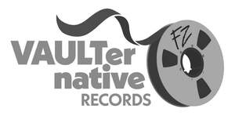

Trade Mark Journal No.2026/010 6 March 2026
UK00004340559 13 February 2026 (9,16,18,21,25,41)

International priority date claimed: 4 February 2026
(United States of America)
(99634006)
International priority date claimed: 4 February 2026
(United States of America)
(99634027)
International priority date claimed: 4 February 2026
(United States of America)
(99634054)
International priority date claimed: 11 February 2026
(United States of America)
(99647652)
International priority date claimed: 11 February 2026
(United States of America)
(99647701)
International priority date claimed: 11 February 2026
(United States of America)
(99647752)
- Class 9
- Musical sound recordings; Musical video recordings; Downloadable musical sound recordings; Downloadable musical video recordings; Downloadable music files; Downloadable audio and video recordings featuring music, art, theatrical and artistic performances, and entertainment; Audio and video recordings featuring music, art, theatrical and artistic performances, and music-related entertainment; Audio and video recordings featuring music, art, theatrical and artistic performances, and music-related entertainment, all recorded on audio tapes, audio discs, audio cassettes, video discs, CDs, DVDs, phonograph records, and vinyl records; Downloadable ring tones; Downloadable photographs; Downloadable computer graphics; Downloadable graphics for mobile phones; Turntable slipmats; Mouse pads; Downloadable electronic publications in the nature of books, booklets, sheet music, journals, manuals, brochures, leaflets, pamphlets and newsletters in the field of music and music-related entertainment; Downloadable mobile applications for accessing, displaying, distributing, downloading, playing, receiving, streaming, and transmitting music and music-related entertainment; Plastic cases specially adapted holding compact discs, DVDs and other electronic media; Plastic and cardboard cases for storing record albums; Phonograph record sleeves; Downloadable video and computer game programs; Recorded video game software; Recorded computer game software; Decorative magnets; Carrying cases for cell phones; Protective carrying cases for portable music players; Digital collectibles in the nature of downloadable image files of music artists, bands, celebrities, trend setters, influencers, record labels and entertainment programs authenticated by non-fungible tokens (NFTs); Digital collectibles in the nature of downloadable audio and video recordings in the field of music concerts authenticated by non-fungible tokens (NFTs); Downloadable digital collectibles being image and video files in the field of music, art, theatrical and artistic performances, and music-related entertainment authenticated by non-fungible tokens (NFTs); Digital collectibles in the nature of downloadable music files authenticated by non-fungible tokens (NFTs); Downloadable multimedia files containing artwork, text, audio, video, games, and Internet Web links relating to music, art, theatrical and artistic performances, and music-related entertainment; Downloadable images in the field of music and music-related entertainment; Downloadable virtual goods in the nature of image files of clothing, headwear, footwear, phonograph records, jewelry, artwork, pets, furniture, eyewear, posters, toys, sporting goods, dinnerware, drinkware, trading cards, musical instruments, music-related consumer merchandise, and avatars for use in online virtual environments.
- Class 16
- Printed publications, namely, books, booklets, magazines, journals, manuals, brochures, leaflets, pamphlets and newsletters in the field of music, entertainment, art and culture; Wrapping paper; Gift wrap paper; Plastic gift wrap; Gift bags; Paper gift tags; Ribbons and bows of paper for gift wrapping; Printed general feature magazines; Printed sheet music; Printed song books; Printed address books; Printed appointment books; Printed calendars; Printed greeting cards; Printed post cards; Pen and pencil cases; Pencil sharpeners; Pens; Pencils; Printed date books; Bumper stickers; Decals; Magnetic decals; Printed notepads; Stickers; Rubber stamps; Posters made of paper; Collectible printed trading cards; Money clips; Stationery; Printed photographs; Holiday ornaments of paper, other than Christmas tree ornaments; Document portfolios.
- Class 18
- All-purpose carrying bags; Athletic bags; Attache cases; Back packs; Beach bags; Billfolds; Book bags; Briefcase-type portfolios; Briefcases; Canvas shopping bags; Carry-on bags; Carrying cases; Clothing for pets; Coin purses; Collars for pets; Credit card cases; Credit card holders; Duffle bags; Fanny packs; Garment bags for travel; Gym bags; Handbags; Holdalls; Luggage; Luggage straps; Luggage tags; Messenger bags; Mesh shopping bags; Music cases; Net bags for shopping; Parasols; Pet leashes; Pocketbooks; Purses; Reins for guiding children; Reusable shopping bags; Rucksacks; Satchels; Shoulder bags; Shoulder straps; Sports bags; Suitcases; Toiletry bags sold empty; Tote bags; Travel bags; Trunks being luggage; Umbrellas; Unfitted vanity cases; Vanity cases sold empty; Walking sticks; Wallets; Leather bags; Leather cases; Leather handbags; Leather purses; Leather suitcases; Leather wallets.
- Class 21
- Champagne buckets; Cocktail shakers; Shot glasses; Cocktail picks; Beverage stirrers; Cork screws; Cork holders; Bottle openers; Tumblers for use as drinking glasses; Wine glasses; Goblets; Carafes; Decanters; Non-electric coolers for wine; Drinking steins; Drinking glasses; Insulating sleeve holders for beverage cans; Foam drink holders being sleeves; Insulated containers for food or beverages; Thermal insulated bags for food or beverages; Coasters, not of paper or textile; Mugs; Beverageware; Glass beverageware; Bakeware; Dinnerware; Canteens; Figurines of china, crystal, earthenware, glass, porcelain or terra cotta; Ornaments of glass; China ornaments; Ornaments of porcelain; Ornaments of crystal; Ornaments of terra cotta; Holiday ornaments of ceramic, other than Christmas tree ornaments; Holiday ornaments of porcelain, other than Christmas tree ornaments; Cookery molds; Combs; Cosmetic brushes; Commemorative plates; Cookie jars; Decorative glass, not for building; Decorative plates; Dishes; Drinking flasks; Vases; Bowls; Perfume atomizers, sold empty; Perfume sprayers sold empty; Non-electric portable coolers; Non-electric portable beverage coolers; Beverage dispensing urns, non-electric; Piggy banks; Shoe horns; Sports bottles sold empty; Toothbrushes; Electric toothbrushes; Toothbrush cases; Dental floss; Dental floss picks; Electric toothbrush replacement heads; Water apparatus for cleaning teeth and gums for home use; Soap dishes; Soap dispensing bottles, sold empty; Clothes-pins; Portable cool boxes, non-electric; Flower pots; Polyethylene terephthalate (PET) bottles for beverages, sold empty; Paper cups; Plastic cups; Sprayer wands for garden hoses; Watering cans; Spray bottles, sold empty; Grass sprinklers; Sprinklers for watering flowers and plants; Lunch boxes; Lunch pails; Trivets; Incense burners; Zesters; Nutcrackers; Hand-operated lobster shell crackers; Eyelash separators; Non-electric ice crushers; Non-electric pasta makers for domestic use; Scoops for household purposes; Money boxes; Place mats, not of paper or textile; Dishcloths; Potholders; Barbecue mitts; Oven mitts; Drinking vessels; Insulated flasks; Insulated vacuum flasks; Vacuum flasks; Vacuum bottles; Insulated containers for beverage cans for domestic use.
- Class 25
- Clothing, namely, bathrobes, blouses, body suits, coats, coveralls, dresses, gowns, Halloween costumes, hosiery, jackets, leggings, mittens, gloves, night gowns, overalls, pajamas, pants, robes, scarves, shawls, shirts, shorts, skirts, socks, suspenders, sweat jackets, sweat pants, sweat shirts, sweaters, swimwear, tank tops, ties, tights, tops, t-shirts, bottoms, undergarments, underwear, vests, and wrist bands; Footwear; Headwear; Caps being headwear; Visors being headwear; Bandanas; Ear muffs; Hats; Belts for clothing; Bustiers; Lingerie; Aprons; Booties; Cloth bibs; Creepers; Infantwear; Rompers.
- Class 41
- Entertainment services in the nature of recording, production, and post-production services in the field of music provided by record labels; Entertainment services in the nature of development, creation, production and post-production services of multimedia entertainment content; Multimedia entertainment services in the nature of recording, production and post-production services in the fields of music, video, and films; Recording studio services; Record production; Record mastering; Sound mixing; Music publishing services; Music composition for others; Production of sound and music video recordings; Editing or recording of sounds and images; Ticket reservation and booking for entertainment events; Arranging and conducting of concerts; Production of radio and television programs; Production of podcasts; Distribution of television programs for others; Distribution of radio programs for others; Providing online non-downloadable audio recordings in the field of music and music-related entertainment; Providing online music, not downloadable; Providing digital music from the Internet, not downloadable; Entertainment services, namely, providing non-downloadable prerecorded music via a website; Fan clubs; Radio entertainment production; Film and video film production; Entertainment services, namely, continuing video programs featuring music and music-related entertainment accessible via television, radio, webcast, podcast, and the Internet; Entertainment, namely, a continuing musical entertainment show broadcast over television, satellite, audio, and video media; Publishing of books, magazines; Entertainment, namely, live music concerts; Presentation of live show performances; Live performances by a musical group; Live music performances; Entertainment services, namely, personal appearances by a artists, celebrities, and other influential persons and trend setters; Entertainment services in the nature of live vocal performances by musical bands; Presentation of musical performances; Providing a website featuring non-downloadable videos in the field of music and music-related entertainment; Providing a website featuring non-downloadable photographs; Entertainment services, namely, providing non-downloadable prerecorded music, information in the field of music, and commentary and articles about music, all on-line via a global computer network; Entertainment services, namely, live, televised and movie appearances by a professional entertainer; Organization of exhibitions for musical entertainment; Publishing of web magazines; Providing online non-downloadable digital collectibles in the nature of video clips in the field of music and music-related entertainment; Providing online non-downloadable digital collectibles in the nature of music clips; Provision of information relating to music; Providing information in the field of entertainment; Providing information in the field of music and entertainment via a website; Entertainment information services, namely, providing information and news releases about a musical artist; Providing an Internet website portal in the field of music; Organizing and conducting festivals in the field of music, art, and music-related entertainment for cultural or entertainment purposes; Entertainment services, namely, an ongoing multimedia program featuring music, art, and music-related entertainment distributed via various platforms across multiple forms of transmission media; Development and dissemination of printed educational materials of others in the field of music and music-related entertainment; Entertainment services, namely, providing on-line reviews of music and music-related entertainment; Providing on-line newsletters in the field of music and music-related entertainment; Educational services, namely, providing classes, seminars, workshops, conferences, mentoring, tutoring, and educational speakers in the fields of music, entertainment, arts, crafts, and sports; Educational services, namely, developing, arranging, and conducting educational conferences and programs and providing courses of instruction in the field of music, entertainment, arts, crafts, and sports; Providing training in the field of music, entertainment, arts, crafts, and sports; Providing online non-downloadable electronic publications in the nature of books, brochures, sheet music, journals, manuals, brochures, pamphlets, pamphlets and newsletters in the field of music and music-related entertainment; Art exhibitions; Planning arrangement of showing movies, shows, plays or musical performances; Organization of social entertainment events; Organization of entertainment exhibition events; Booking of seats for shows; Providing online images, not downloadable, in the field of music and entertainment; Providing online non-downloadable photographs; Providing non-downloadable videos in the field of music and entertainment via streaming transmission services; Music distribution services in the nature of providing online non-downloadable music to digital streaming providers on behalf of others; Providing online non-downloadable videos in the field of music and music-related entertainment.
UMG Recordings, Inc.
Representative: Abion UK Limited